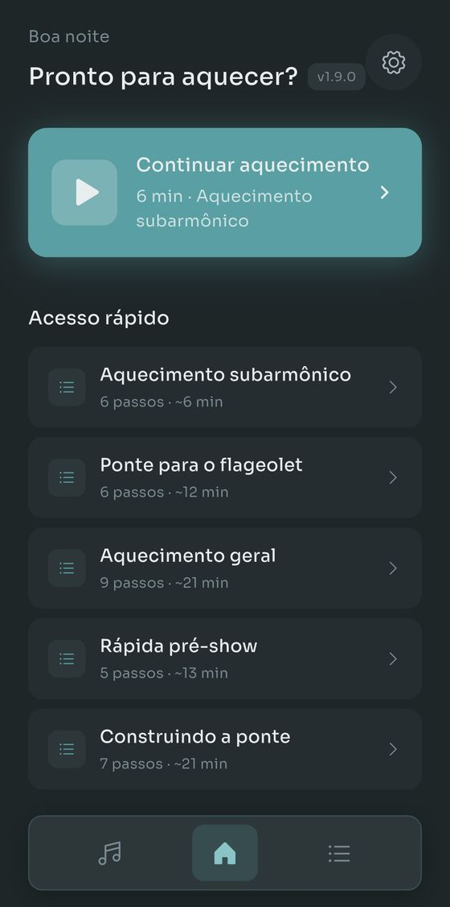
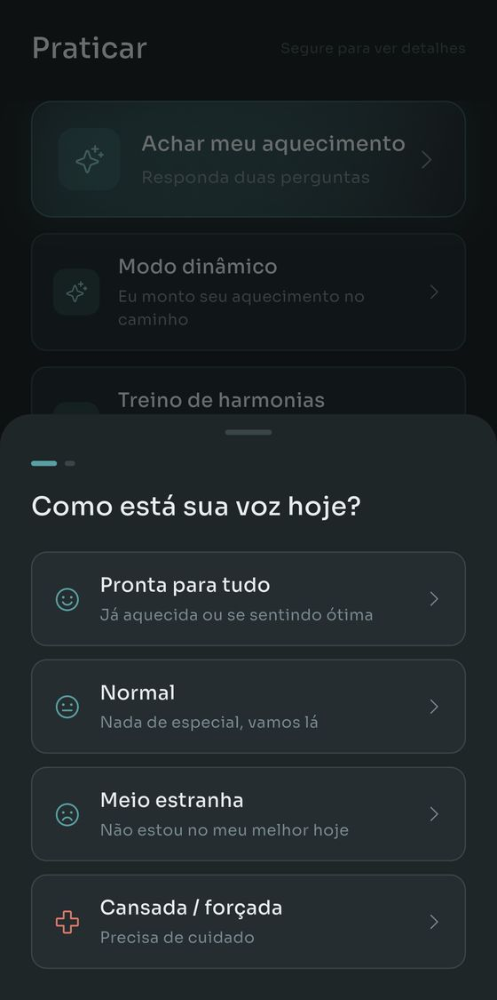
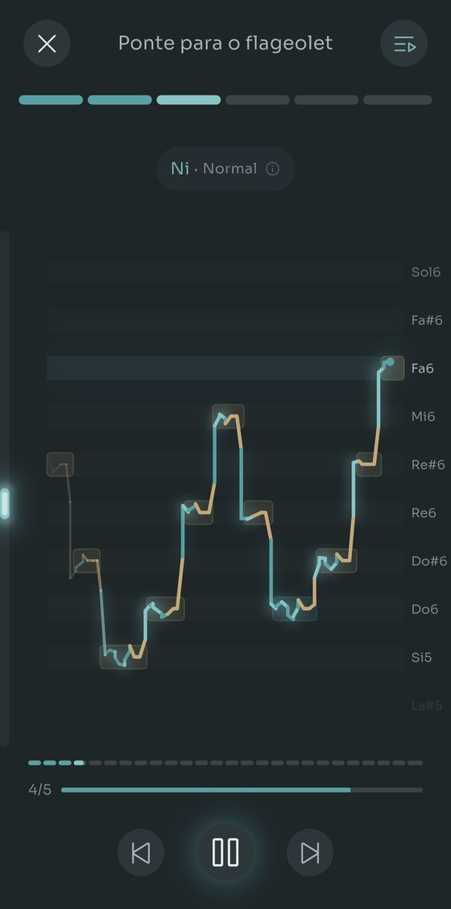
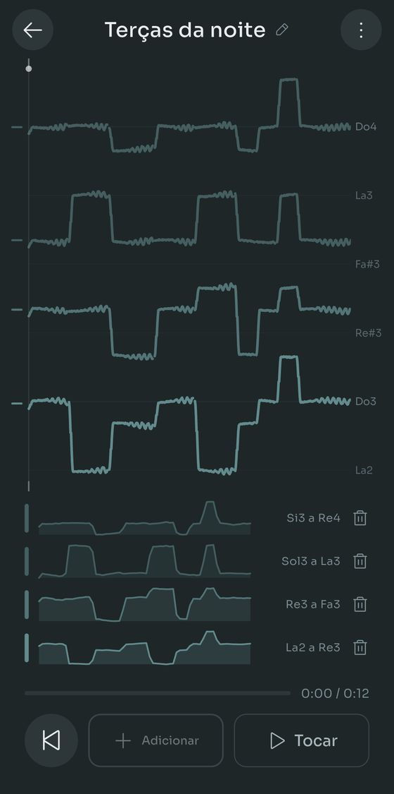
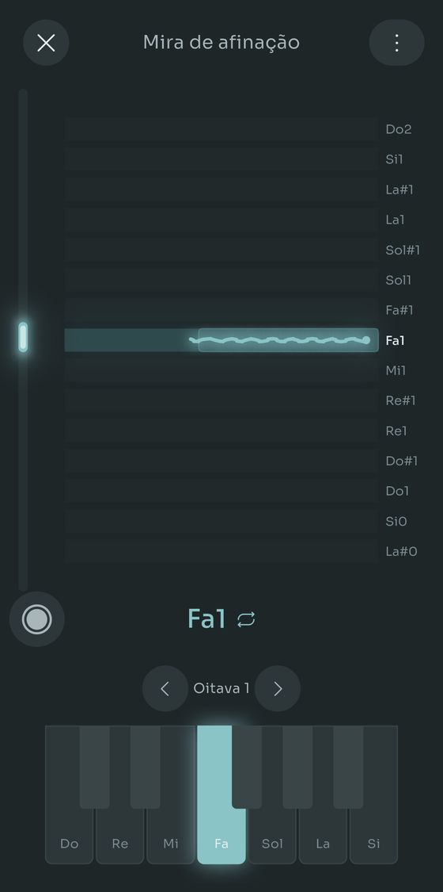
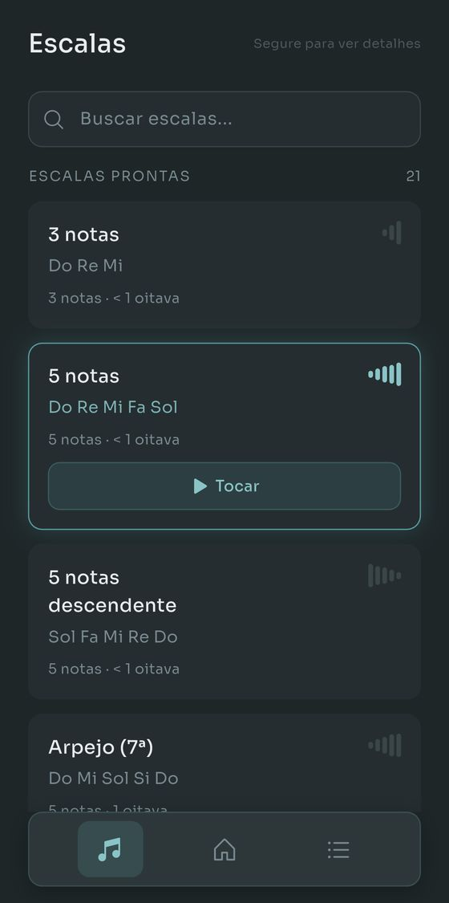

O Scalita toca escalas em um Salamander Grand Piano enquanto você canta por cima. Você configura sua extensão vocal uma vez e cada exercício se transpõe para caber nela.
Escalas simples. Piano real. Sem enrolação.






Nada para ler antes, nada para cadastrar.
Cante no telefone e o Scalita acha sua nota mais grave e a mais aguda. Ou escolha um tipo de voz e pule essa parte.
São 21 escalas e 14 rotinas prontas. Na dúvida? Responda duas perguntas e o Encontrar Meu Aquecimento escolhe por você.
O piano toca o padrão, sobe um semitom e toca de novo, tudo dentro da extensão que você configurou.
Samples reais do Salamander Grand Piano nas 88 teclas, de Lá0 a Dó8. Por mais grave ou agudo que você cante, existe uma nota gravada para aquilo.
Grave uma linha. Cante outra por cima e ouça as duas juntas. Até quatro vozes, e uma voz pode ser uma tomada do microfone, um arquivo que você já tinha ou uma escala tocada pelo app.
Gravar é de graça. As quatro vozes também, e a duração também. O Pro só entra se você quiser guardar mais de uma harmonia ao mesmo tempo, e sempre dá para montar outra inteira e ficar com ela no lugar.
O resto do app, em quatro pedaços. Nada disso atrapalha no primeiro dia.
O Encontrar Meu Aquecimento pergunta como está a sua voz hoje e o que você quer trabalhar, e então escolhe a rotina e ajusta o andamento. O Modo Adaptativo joga o plano fora: depois de cada exercício você diz como foi e o próximo se ajusta. Diga que você tem dez minutos e ele distribui a sessão inteira para caber, com desaquecimento incluso.
Coloque fones e um traço ao vivo mostra onde você cai em cada nota, verde quando está afinado e âmbar quando escorrega. A mira de afinação reduz isso a uma tecla por vez, e agora guarda suas tomadas: o áudio, a linha de afinação e o que o teclado estava fazendo, para você abrir uma semana que vem e ouvir se mudou alguma coisa.
Quase todo app de aquecimento para na voz de peito e na de cabeça. Configure uma extensão para cada registro que você usa de verdade e três rotinas dedicadas se abrem: o ronco embaixo da sua voz de peito, o timbre de flauta acima da sua extensão e o apito ainda mais em cima. Marque também a sua passagem, e os exercícios se constroem em volta dela.
Monte escalas e rotinas do zero: intervalos, sílabas, andamentos, nota inicial. Ou cante ou toque um padrão no Detector de Escalas e ele escreve as notas para você. Refeito na 1.9.0, ele precisa de cerca de metade das correções em canto real, e aponta as notas que ficaram no cara ou coroa para você saber onde olhar.
Todos os recursos funcionam de graça. O Pro tira os limites de quanto você guarda.
Um pagamento só, sem assinatura. O preço de cada país é definido pelo Google Play.
De graça no Google Play. Sem conta, sem anúncios, nada para cancelar.
Só Android por enquanto. Em português, inglês, espanhol, francês e alemão.